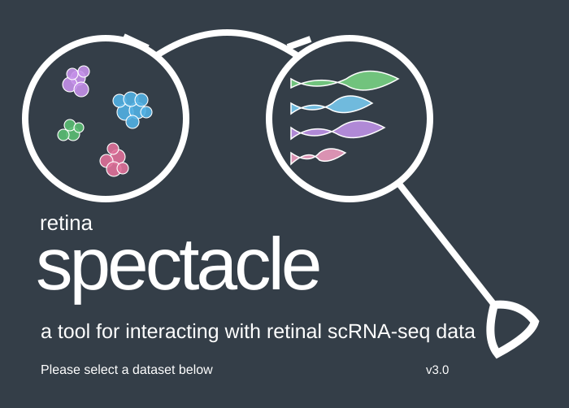

Quick start
- Select a dataset from the table (below)Expand the triangle to view the study description.
Select a dataset using the radio button on the left. - Select “Dashboard” from the left menu
- Explore expression with heatmaps or violin plots
- Open a saved analysis or export your plots and tables
| TISSUE(S) | TECHNOLOGY | ||||||
|---|---|---|---|---|---|---|---|
| Loading studies… | |||||||
Data sources and automatic imports
Every visit reads the latest source status. Background repository checks run on a shared 30-minute schedule. New supported studies are imported automatically; existing versions remain available during processing.
Select a dataset
Choose a retinal study in Data Select to begin.
Dimensionality reduction plot color
Genes for heatmap
Up to six genes, separated by commas. All retained cells.
Dot plot
Descriptive gene rankings
| Gene | Mean | Detected | Δ mean |
|---|
Descriptive rankings; no significance claims.
Select group 1
Use Command / Ctrl to select multiple groups.
Cell-level Wilcoxon rank-sum test with Benjamini–Hochberg correction. Requires independent biological validation.
gene for violin plot
—
ln(1 + CP10K)Expression by sample
Expression by cell group
Recluster selected cells
Choose cell groups below or draw group 1 with the lasso on the dimensionality reduction plot.
Recomputes PCA, neighbors, UMAP and clusters for 12–50,000 cells. Expression overlays retain the parent study’s normalization.
Select group 2
Select a comparison population distinct from group 1. Choose the selection mode in the left panel.
Differential-expression results
| Gene | log₂ FC (1/2) | Δ detected % | p-value | BH q-value |
|---|
Saved analyses
Open completed analyses of the public GSE245561 human PDR membrane study. Each result retains the dataset version and analysis methods.
Population comparison
120 cells from original cluster C0 versus 120 cells from C1. 3,313 genes tested. Explore the statistics and download CSV or Excel.
Reclustered subset
A new UMAP, t-SNE and clustering analysis for 180 selected cells. Use Original map to return to the complete study.
These are exploratory examples from PDR samples without a healthy control. Cells do not replace independent biological replicates.
Your first five minutes
- Open Data Select to follow automatic imports, then select a ready study. Check its repository description and deposited sample metadata in this guide.
- Search a gene such as Vegfa (mouse) or AEBP1 (human). Explore its expression map and sample summaries.
- Filter a cell group or sample. Hover a cell to inspect its barcode, counts and quality measurements.
- Open Heatmap for gene panels and use the separate violin plot. Open Saved analyses to inspect completed population comparisons and reclustered subsets.
- Export your visible cells or summaries, save a plot, and copy a link to return to the same study and filters.
What the values mean
For raw-count studies, each gene value is ln(1 + 10,000 × raw gene count / total counts in the cell). Studies with verified deposited log-normalized data retain that scale; see the study-specific methods below. Zero means no detected counts in this assay, not proof the gene is biologically absent. Summaries include zero-expression cells. Gene values are rounded to five decimals for browser delivery.
Processing and reproducibility
Interpretation limits
- GSE178121 has one pooled library per condition. A cell-level difference cannot establish a replicated disease effect.
- GSE245561 contains PDR fibrovascular membranes only. It cannot provide a healthy-versus-diabetic comparison.
- Cell-level differential expression is exploratory. No batch correction, doublet detection, ambient-RNA correction, donor-aware differential testing, pathway enrichment or cell-communication inference is implemented.
- UMAP positions and Leiden groups are newly computed here. Labels are provisional marker suggestions and can include mixed populations.
- Mouse retina and human membranes represent different species and tissues. The app does not merge their counts or imply direct equivalence.
- This is an independent research explorer inspired by Michael’s brief. It is not affiliated with Spectacle or a clinical diagnostic tool.
Sources
Citation and About Us
Retina Spectacle is an independent implementation of the Spectacle interface for public retinal and diabetic-retinopathy single-cell datasets. It is not affiliated with the original Spectacle team or the University of Iowa.
Data sources
The library automatically discovers accessions in the 2024 diabetic retinopathy review and newly indexed relevant GEO studies. Cite the original study when using its data. Dataset descriptions and source links are available in Data Select.
Interface reference
Plots and clusters are calculated by this app. They are not claimed identical to the original authors’ or Spectacle’s analyses.
cellcuratoR
Spectacle’s original analysis application is based on cellcuratoR.
View the original cellcuratoR project
This retinal adaptation uses a separate processing service for repository retrieval, count-matrix processing and analysis. See How to guide for the exact methods.
Change log
3.1 — Available research tools
Kept the working public study library, expression plots, exports and saved analyses. Removed unfinished sections and unavailable job controls.
3.0 — Retina Spectacle interface
Rebuilt Data Select and Dashboard to follow Spectacle’s navigation, charcoal theme, dense table and paired analysis panels. Added expandable study rows, tissue filters, pagination, plot labels and violin grouping controls.
2.1 — Automatic source updates
Scheduled source checks, background imports, immutable dataset versions, public result links and failure recovery.